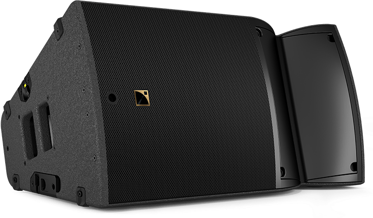
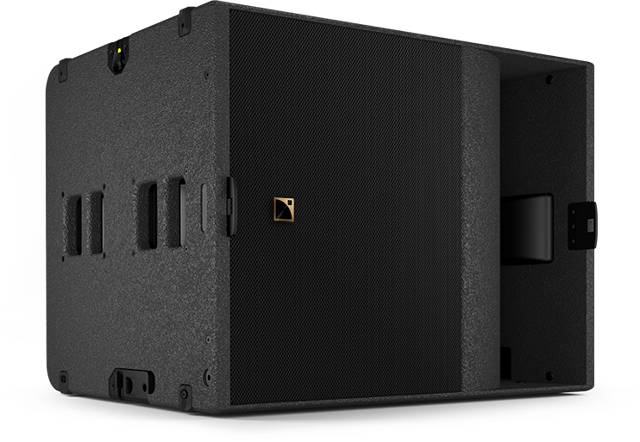

MÉDIACOM SON · LUMIÈRE · VIDÉO · SCÈNE SEPTEMBRE 2026 |
|
MARSEILLE · LA CIOTAT Les temps forts
de septembre.| | De Bagatelle au Radisson : quatre prestations de septembre et les A15 Wide / KS21 qui rejoignent notre parc. |
|
LE FILM DE SEPTEMBRE Quatre rendez-vous,
quatre dispositifs. |
01 / 3 septembre · Bagatelle, Marseille Bagatelle danse pour la Timone.Yann Muller aux platines pour la deuxième soirée solidaire de PHOCÉO, le fonds de dotation de l’AP-HM. Nous avons assuré la scène, le son, la lumière et la vidéo. Les bénéfices contribuent à financer un IRM-Linac pour le traitement des cancers pédiatriques à la Timone. L-Acoustics K3 + KS28 · Écran LED Kinesik Découvrir la prestation → | |
|
02 / 3–5 septembre · La Ciotat ICI Live, le concert vu en grand.Pour sa cinquième édition, ICI Live a réuni le public sur le Port-Vieux pendant trois soirées. Notre écran LED de 20 m² et sa structure ont permis de retransmettre les concerts. À l’affiche, notamment : Jenifer, Yann Muller, Marine et Benjamin Biolay. Écran LED de 20 m² · Structure L’édition 2026 sur Radio France → | |
|
03 / 18–19 septembre · J4, Marseille Afro Heat fait vibrer le J4.Près de 6 000 personnes pour une première édition. Sur l’esplanade du J4, nous avons déployé une scène mobile couverte de 60 m², le son et la lumière. Une seconde scène était équipée de nos A15 Wide et KS21 : les nouveaux arrivants au parc étaient déjà sur le terrain. MediaScène 60 m² · L-Acoustics K3 + KS28 · Lumière Robe Voir le montage sur Instagram → | |
|
04 / 25–26 septembre · Radisson Blu, Marseille Un congrès, en salle et à distance.Pour les Journées francophones de l’angio-œdème héréditaire (AOH), nous avons accompagné Takeda au Radisson Blu Marseille Vieux-Port. Près de 50 m³ de matériel mobilisés, de la scène à la régie : son, lumière, vidéo, captation et diffusion en direct pour les participants à distance. Scène Sixty 82 · Vidéo Barco · Captation et streaming Voir les coulisses sur Instagram → | |
|
NOUVEAU AU PARC Le parc son s’agrandit.Déjà à l’œuvre sur la seconde scène d’Afro Heat, les A15 Wide et KS21 sont désormais disponibles à la location. |
 | L-ACOUSTICS A15 WideEnceinte 15 pouces à couverture réglable avec Panflex : 70°, 110° ou 90° asymétrique. 30° en vertical · 33 kg par enceinte Découvrir l’A15 Wide → |
|
 | L-ACOUSTICS KS21Caisson 21 pouces. En configuration cardioïde, plusieurs KS21 atténuent le grave à l’arrière. 29 Hz à −10 dB¹ · 21″ haut-parleur Découvrir le KS21 → |
¹ Avec le préréglage KS21_60. Caractéristiques : A15 Wide · KS21. |
 | MEDIASCÈNE · CAP SUR L’HIVER Vos scènes pour l’hiver.Marchés de Noël, fêtes de fin d’année, événements en station : notre scène mobile couverte de 60 m² et notre deuxième scène modulable de 80 à 120 m², livrées et montées par nos équipes. Rendez-vous le 10 octobre dans notre prochaine lettre pour découvrir l’offre hivernale. Découvrir la MediaScène 60 m² → |
|
VOTRE PROJET Parlons de
votre événement.Indiquez le lieu, la scène et les équipements souhaités, les dates et le nombre de jours pour préparer votre devis. Ou écrivez à contact@mediacom.org |
|
SUIVEZ NOS COULISSES |
MÉDIACOM · EURODIREX Prestataire technique son, lumière, vidéo & scène
25 boulevard de Saint-Marcel, 13011 Marseille Vous recevez les actualités de Médiacom. Demander la désinscription |